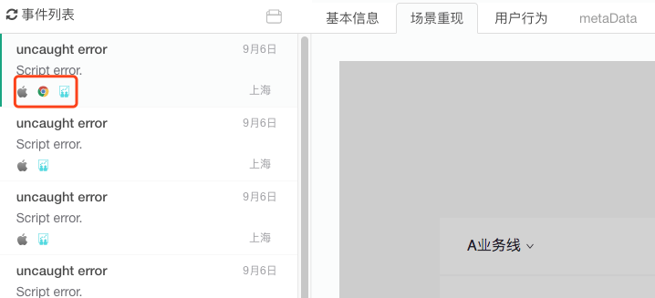
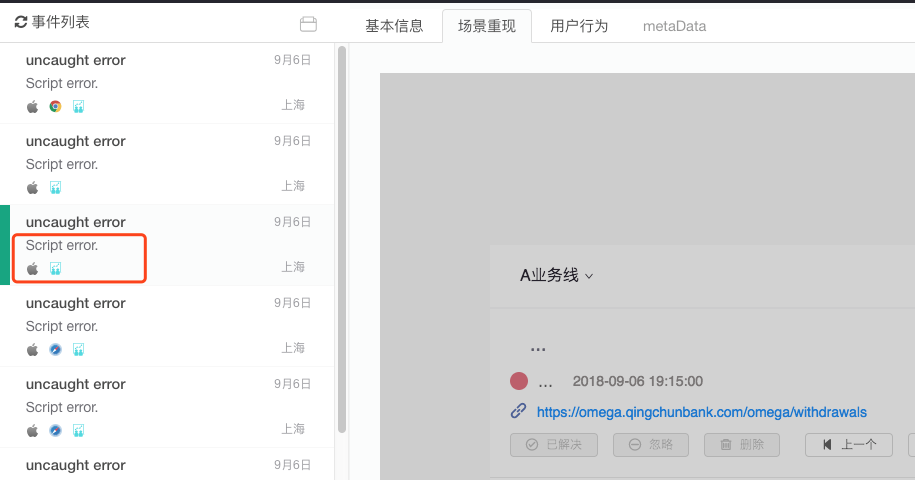

摘要： 通过录屏或者截图，快速复现BUG场景。
Fundebug经授权转载，版权归原作者所有。
PS：本文关于Fundebug录屏功能的内容有些不准确的地方，比如录屏并非通过截图实现的，录屏插件的BUG也已经修复了，录屏并非只支持Chrome，录屏数据并不大，录屏性能也优化了很多。
背景：市面上的监控系统有很多，大多收费，对于小型前端项目来说，必然是痛点。另一点主要原因是，功能虽然通用，却未必能够满足我们自己的需求，所以我们自给自足也许是个不错的办法。
这是搭建前端监控系统的第二章，主要是介绍如何统计js报错，跟着我一步步做，你也能搭建出一个属于自己的前端监控系统。
目前已经在运行的线上Demo：前端监控系统
代码和讲解都放在这篇文章里： 监控系统介绍及代码
用户对前端程序员来说，就是一个黑匣子。 如果用户上报了一个错误，前端程序员就是两眼一抹黑，因为很多错误是没法复现的。我问过很多前端工程师，他们的回答都是，如果你没法复现Bug，我怎么去解决这个Bug呢。 那么有没有一个办法可以解决用户和前端程序员之间的障碍呢， 让用户对我们来说，不再是黑匣子，而是透明化。用户的页面长什么样，他们都做了什么操作，发生了什么错误，我们都能够清晰的知道，那么，再有问题上报的时候，我就会很有信心的说一句： I Can Fix it !
最近试用了一下Fundebug，进入首页，第一条便是 黑科技！支持录屏。 这下就惊呆我了，js做前端监控，居然还能录屏？ 你丫这是要逆天啊？ 所以，赶紧注册了账号，进行试用。
经过各种配置后，进行测试发布，发现毫无效果，所以询问客服。 回答是： 目前录制功能有bug，所以默认为关闭状态，将配置属性silentVideo设置为false即可。(PS：Fundebug的录屏BUG已经修复了)


果不其然，经过客服的细心指导，终于成功了。 图一为电脑版chrome浏览器，可以正常进行屏幕录制。 图二为手机app自带的webview浏览器，第一次点击显示灰屏，第二次点击显示为电脑版的录屏。经过测试，除了chrome之外，其他浏览器均不支持。这让我想起一个可以进行js截屏的库JSCapture， 也是只支持chrome浏览器的。我猜想，Fundebug用的应该就是这个黑科技。 Fundebug也表示并非真的视频，应该是多做了几帧截屏，然后顺序切换，看着像视频了。（PS：Fundebug的录屏功能并非通过截图实现的）
虽然是黑科技，但是也面临着几个比较大的问题：
一、因为支持的浏览器只有chrome，而chrome又是兼容性做得最好的浏览器了，很多问题在这个浏览器上根本不会发生， 所以这个黑科技还是有待来日，也许会得到更多浏览器的支持之后，才能真正的发挥作用。不得不感慨一句：唉，兼容性-前端程序员一生的宿命。（PS：Fundebug的录屏功能并非只支持Chrome）
二、就算屏幕录制解决了，上传了一个至少有个几帧的仿视频，这个流量大小可是很严重问题了，虽然Fundebug说是经过特殊处理压缩后，一个视频只有几十KB，我总觉得不是很靠谱，感觉比较难以实现（待验证）。(PS：Fundebug的录屏数据经过优化和压缩，因此并不大)
三、我自己的手机是iphone6 Plus, 当Fundebug在我的手机上进行屏幕捕捉的时候，手机都会卡顿很久。 我之前曾尝试在iphone6上用js进行截图，但是也会出现卡顿现象，这一点在微信浏览器上表现极为明显，甚至会导致微信重新刷新页面。 好在iphone6以上的版本，截屏的效率都很高，不会再出现卡顿了。(PS：Fundebug的录屏性能经过持续优化)
所以，Fundebug的黑科技是不能够普及的，但是我们可以换个思路来记录用户的行为。
之前，我曾经考虑过一个需求，记录下用户的每个行为，访问页面的截图，点击按钮的局部截图，这样，在错误发生的时候，就能清清楚楚的知道用户在页面上做了什么，但是由于截图上传需要耗费的流量确实太大，所以这个想法不得不放弃了。 今天，我看了Fundebug的黑科技，却给了一些启发。 我将针对以上提出的三个难点，完善页面上用户行为追踪功能。
用户行为追踪功能
一、 上传截图，流量消耗过大怎么办，对图片资源进行极致压缩。
进行截图后，需要上传的数据很大，因为是图片数据，多则大几百Kb, 少则也有个上百Kb, 这么大的流量，对用户端，损耗确实过大。
首先，对js截图进行了几种测试，如图：
以上截图方式的参数如下：
| 参考 | 截图方式一 | 截图方式二 | 截图方式三 |
|---|---|---|---|
| 压缩前/后长度 | 28764/10787 | 93076/34903 | 168312/63118 |
| 图片压缩率 | 72% | 40% | 0% |
| 截图大小 | 21Kb | 68.2Kb | 123Kb |
综上分析，截图方式一， 压缩率高，虽然截图不是很清晰，但是，也能够看得出，线上用户页面是什么样子的。
而且，也解决了，在低端机上截图消耗性能过大的弊端，二十几Kb的流量，也是我们完全能够接受的大小了。
由此可见，该方式能够完全能够满足我们追踪用户行为的需求。
二、如果用户量非常多， 用户频繁的上传，也是一个大问题
所以，我的建议是分散流量，让每个用户为我们贡献至少一次页面截图：
① 每个用户都在随机的页面，随机的时间上传一个页面截图，以及一个点击区域截图，有且仅上传一次，一个用户的生命周期中只贡献一次页面截图
② 每个用户发生某一类错误时，也只需上传一个截图即可，多个类型的错误，则上传多个截图。这样可以大量节省用户的上传次数。
③ 用户的截图数据很大， 时间长了需要很大的硬盘空间， 所以我的建议是，每个流程页面，只需要对应一个（点击区域截图，同理）。 每个用户的某一种类型的错误页面也只对应一个（方便定位错误原因）
如何截图，如何压缩上传资源的大小
// js处理截图
this.screenShot = function(cntElem, callback) {
var shareContent = cntElem; //需要截图的包裹的（原生的）DOM 对象
var width = shareContent.offsetWidth; //获取dom 宽度
var height = shareContent.offsetHeight; //获取dom 高度
var canvas = document.createElement("canvas"); //创建一个canvas节点
var scale = 0.6; //定义任意放大倍数 支持小数
canvas.style.display = "none";
canvas.width = width * scale; //定义canvas 宽度 * 缩放
canvas.height = height * scale; //定义canvas高度 *缩放
canvas.getContext("2d").scale(scale, scale); //获取context,设置scale
var opts = {
scale: scale, // 添加的scale 参数
canvas: canvas, //自定义 canvas
logging: false, //日志开关，便于查看html2canvas的内部执行流程
width: width, //dom 原始宽度
height: height,
useCORS: true // 【重要】开启跨域配置
};
html2canvas(cntElem, opts).then(function(canvas) {
var dataURL = canvas.toDataURL();
var tempCompress = dataURL.replace("data:image/png;base64,", "");
var compressedDataURL = Base64String.compress(tempCompress);
callback(compressedDataURL);
});
};要做成这件事，必须依赖两个js库的帮忙了。
html2Canvas 执行html页面截图， lz-string 执行对字符串长度的压缩，使用方式，如上方代码所示。
由于用户行为追踪功能可以由使用者选择性开起， 所以，建议这两个js库文件有客户端引入, 这样就可以减少探针代码的大小， 如此，我们就需要定义一个加载js文件的小工具
// 加载js文件的小工具
this.loadJs = function(url, callback) {
var script = document.createElement("script");
script.async = 1;
script.src = url;
script.onload = callback;
var dom = document.getElementsByTagName("script")[0];
dom.parentNode.insertBefore(script, dom);
return dom;
};// html2Canvas 库文件加载完成后，通知全局变量，lz-string 同理
utils.loadJs("//html2canvas.hertzen.com/dist/html2canvas.min.js", function() {
html2CanvasLoaded = true;
});OK, 数据都已经准备妥当，剩下的就是要把这些数据存储起来，并和用户行为，以及js错误关联起来。 完成用户行为追踪功能。
PS：本文关于Fundebug录屏功能的内容有些不准确的地方，比如录屏并非通过截图实现的，录屏插件的BUG也已经修复了，录屏并非只支持Chrome，录屏数据并不大，录屏性能也优化了很多。
Fundebug专注于JavaScript、微信小程序、微信小游戏、支付宝小程序、React Native、Node.js和Java线上应用实时BUG监控。 自从2016年双十一正式上线，Fundebug累计处理了10亿+错误事件，付费客户有阳光保险、核桃编程、荔枝FM、掌门1对1、微脉、青团社等众多品牌企业。欢迎大家免费试用！